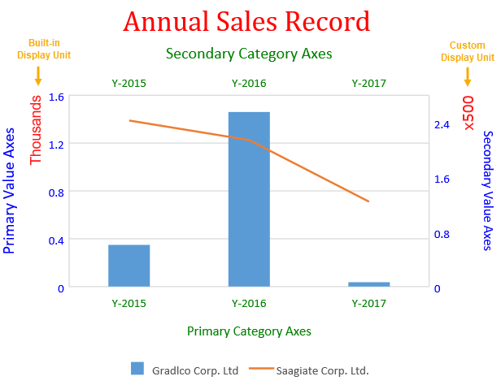

In This Topic
SpreadJS allows users to configure and customize axes in a chart along with the display units.
What are Axes?
Axes refers to the dimensions of the plot area in terms of a horizontal scale (x-axis or category axis) and a vertical scale (y-axis or value axis).
Types of Chart Axes: Typically, a basic two-dimensional chart contains four types of axes, namely the primary category axis, the primary value axis, the secondary category axis and the secondary value axis.
Configure Display Units On Value Axis
Display units can be configured only on the value axis (both primary value axis and secondary value axis). There are two ways to configure axes display units while working with charts in SpreadJS:
- Configure Built-in Display Units - Users can choose from a predefined list of available options (None, Hundreds, Thousands, 10000, 100000, Millions, 100000000000, 10000000000, Billions, Trillions etc.) while showing the displaying unit values.
- Configure Custom Display Units - Users can define a custom display unit with a meaningful numeric value which is not available in the built-in options. However, it is important to note that the custom display unit value provided by the user must be a positive number. Also, while defining custom axis display units, custom text values i.e. strings are not supported.
The following screenshot depicts a chart with built-in configuration of display unit on primary value axis and custom configuration of display unit on secondary value axis.

Users can get or set the axes of the chart using the axes() method of the Chart class. While working with charts, users can add, modify and customize the axes display units as per their specific requirements and preferences. If users want to delete the axis display units from the chart, then the value of the axis display unit must be set to null.
Supported Chart Types - Any chart type that contains value axis supports the configuration of axis display units. Hence, only primary value axis and secondary value axis are supported.
Customize Display Unit Labels
While working with axis display units, users can choose whether to show or hide the display unit labels. Also, users can modify the default appearance of the display unit labels by changing its font, customizing the font color, and configuring the font family of the display units.
Note: The following limitations must be kept in mind while configuring and customizing the axis display units in a chart:
- When the displayUnit.visible is set to false (visibility of the display units is hidden) and users are importing or exporting JSON files, the display unit label nodes will not be created in the xml files and the style of the display unit label will be lost in the output xml file.
- This feature doesn't support the customization of the display unit label text.
Using Code
This code shows how to configure Axes along with display unit labels in the chart.
| JavaScript |
Copy Code
|
|
<script>
$(document).ready(function ()
{
// Initializing Spread
var spread = new GC.Spread.Sheets.Workbook(document.getElementById('ss'), { sheetCount: 1 });
// Get the activesheet
var activeSheet = spread.getActiveSheet();
activeSheet.suspendPaint();
// Prepare data for chart
activeSheet.setValue(0, 1, "Y-2015");
activeSheet.setValue(0, 2, "Y-2016");
activeSheet.setValue(0, 3, "Y-2017");
activeSheet.setValue(0, 4, "Y-2018");
activeSheet.setValue(0, 5, "Y-2019");
activeSheet.setValue(1, 0, "Gradlco Corp. Ltd");
activeSheet.setValue(2, 0, "Saagiate Corp. Ltd.");
activeSheet.setColumnWidth(0, 120);
for (var r = 1; r <= 2; r++) {
for (var c = 1; c <= 5; c++) {
activeSheet.setValue(r, c, parseInt(Math.random() * 5000));
}
}
// Add columnClustered chart
chart_columnClustered = activeSheet.charts.add('chart_columnClustered', GC.Spread.Sheets.Charts.ChartType.columnClustered, 50, 100, 500, 400);
var series = chart_columnClustered.series();
series.add({
chartType: GC.Spread.Sheets.Charts.ChartType.columnClustered,
axisGroup: GC.Spread.Sheets.Charts.AxisGroup.primary,
name: "Sheet1!$A$2",
xValues: "Sheet1!$B$1:$F$1",
yValues: "Sheet1!$B$2:$D$2"
});
series.add({
chartType: GC.Spread.Sheets.Charts.ChartType.line,
axisGroup: GC.Spread.Sheets.Charts.AxisGroup.secondary,
name: "Sheet1!$A$3",
xValues: "Sheet1!$B$1:$F$1",
yValues: "Sheet1!$B$3:$D$3"
});
var axes = chart_columnClustered.axes();
// Configure Primary Category Axis
axes.primaryCategory.style.color = 'green';
axes.primaryCategory.title.color = 'green';
axes.primaryCategory.title.text = 'Primary Category Axes';
// Configure Primary Value Axis
axes.primaryValue.style.color = 'blue';
axes.primaryValue.title.color = 'blue';
axes.primaryValue.title.text = 'Primary Value Axes';
axes.primaryValue.title.fontSize = 16;
// Configure BuiltIn DisplayUnit for "Primary Value Axis"
axes.primaryValue.displayUnit = {
unit: GC.Spread.Sheets.Charts.DisplayUnit.thousands, // BuiltIn DisplayUnit is thousands
visible: true,
style: {
color: 'red',
transparency: 0.1,
fontFamily: 'arial',
fontSize: 14
}
};
// Configure Secondary Category Axis
axes.secondaryCategory.visible = true;
axes.secondaryCategory.style.color = 'green';
axes.secondaryCategory.title.color = 'green';
axes.secondaryCategory.title.text = 'Secondary Category Axes';
axes.secondaryCategory.title.fontSize = 16;
// Configure Custom DisplayUnit for "Secondary Value Axis"
axes.secondaryValue.displayUnit = {
unit: 500, // Custom Display unit is 500
visible: true,
style: {
color: 'red',
transparency: 0.1,
fontFamily: 'Verdana',
fontSize: 14
}
};
// Configure Secondary Value Axis
axes.secondaryValue.style.color = 'blue';
axes.secondaryValue.title.color = 'blue';
axes.secondaryValue.format = 'General';
axes.secondaryValue.title.text = 'Secondary Value Axes';
chart_columnClustered.axes(axes);
// Configure Chart Title
var title = chart_columnClustered.title();
title.text = "Annual Sales Record";
title.fontFamily = "Cambria";
title.fontSize = 28;
title.color = "Red";
chart_columnClustered.title(title);
activeSheet.resumePaint();
});
</script>
|